«СЕРВИС ЛЕГКО» — программа для приёма и ведения заявок на ремонт техники. Менеджер оформляет заявку от клиента, мастер мгновенно получает сигнал и карточку на экране, принимает работу, стороны переписываются и обмениваются файлами, а по завершении автоматически формируется отчёт. Отдельный сервер не нужен: компьютеры связываются напрямую по локальной сети или через интернет (Tailscale).
1.1. Две роли
Возможности ролей
Возможность
Менеджер
Мастер
Создание заявок (одна или несколько одновременно)
Да, с фото и файлами до 5 ГБ
Нет
Приём заявок, напоминания со звуком
—
Да: «Принять», «Отложить ▾» на 5–60 минут, «Заглушить»
Чат по заявке и общий чат, файлы
Да
Да
Завершение ремонта
Да, по любой своей заявке
Да
Отчёт о ремонте (TXT + HTML для печати)
Создаётся автоматически в общей папке менеджера
Получает подтверждение о сохранении
Общая папка (отчёты, журнал CSV, полученные файлы)
Полный доступ
Доступа нет: файлы хранятся локально, видны на вкладке «Файлы»
Обновление программы
Вручную заменой exe-файла
Вручную заменой exe-файла
Сопряжение устройств
Вводит одноразовый код один раз
Нажимает «Добавить компьютер» и называет код; может «забыть» устройство
1.2. Что происходит с данными
Заявки, переписка, очередь отправки и настройки сохраняются на диске по мере работы. После перезапуска принятые ремонты возвращаются с исходным временем начала — ничего вводить заново не нужно.
Все записи выполняются атомарно с резервной копией: даже отключение питания во время записи не портит данные.
Сообщения подписываются, первое подключение защищено одноразовым 6-значным кодом: мастер нажимает «Добавить компьютер» и называет цифры менеджеру. Посторонний не сможет создать заявку или отправить файл.
При обрыве связи сообщения и файлы остаются в очереди «В очереди» и уходят автоматически после восстановления соединения; передача больших файлов продолжается с места обрыва (контроль SHA-256).
1.3. Требования
Системные требования и сетевые параметры
Параметр
Значение
Операционная система
Windows 10 / 11, 64-разрядная
Дополнительное ПО
Не требуется: программа — один самодостаточный exe-файл
Сеть (локальная)
Оба компьютера в одной сети; TCP-порт 47891, UDP-порт 47892 (автопоиск)
Сеть (интернет)
Бесплатный Tailscale на обоих компьютерах — раздел 11
Права
Разрешение в брандмауэре Windows при первом запуске
2. Установка и первый запуск
Скопируйте «СЕРВИС ЛЕГКО.exe» на оба компьютера — установка не требуется.
Запустите программу. При первом запуске появится окно выбора роли (рис. 1). Оно показывается только один раз — дальше программа сразу открывает сохранённую роль. Вернуться к выбору можно кнопкой «Сменить роль» в настройках.
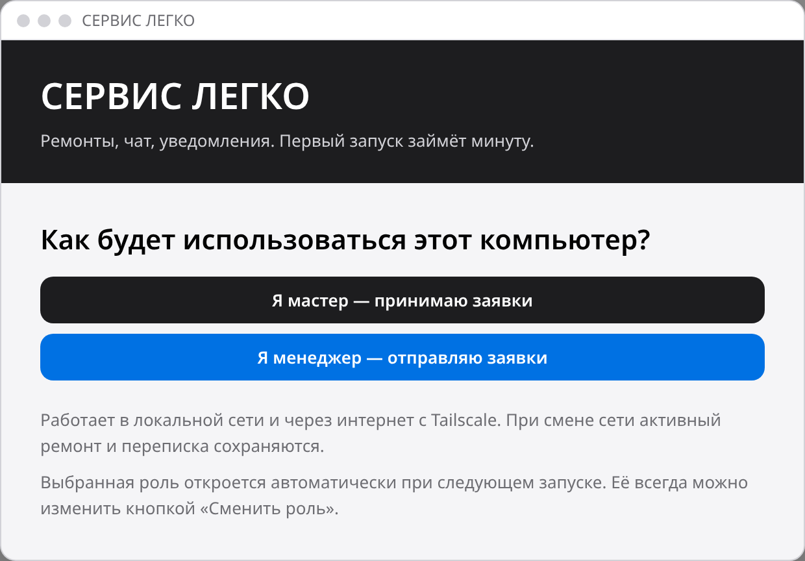
Окно первого запуска — выбор роли компьютера
2.1. На компьютере мастера
Нажмите «Я мастер — принимаю заявки». Программа покажет адреса этого компьютера.
Если Windows спросит про брандмауэр, разрешите доступ в частных сетях.
Нажмите «Начать работу — ожидаем менеджеров». Код сопряжения появляется по кнопке «Добавить компьютер» в «⚙ Настройки» → «Подключение»; там же — список сопряжённых устройств с возможностью «забыть» любое из них.
2.2. На компьютере менеджера
Нажмите «Я менеджер — отправляю заявки». Программа сама найдёт мастера в сети — достаточно нажать на его строку. Если поиск не сработал, введите адрес с экрана мастера вручную (192.168.x.x, 10.x.x.x или 100.x.x.x для Tailscale).
Выберите общую папку для отчётов (вариант по умолчанию подходит; программа проверит запись в неё). Если на компьютере несколько учётных записей Windows, укажите один и тот же путь в каждой.
При первом подключении попросите мастера нажать «Добавить компьютер» — на его экране появится одноразовый код из 6 цифр, действующий 5 минут. Введите его в окне сопряжения (рис. 2). Дальше устройство подключается автоматически, окно кода больше не появляется.
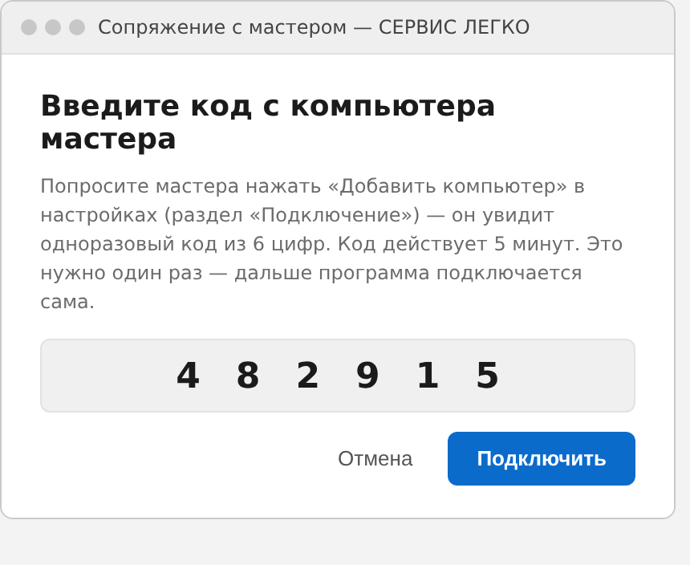
Сопряжение: одноразовый код из 6 цифр вводится один раз
Совет. Если код потребовался снова (переустановка, обновление версии, сброс устройства у мастера), его можно ввести заранее, не дожидаясь окна: «⚙ Настройки» → «Подключение» → поле кода → «Подтвердить код». Программа отправит его сама при подключении. Если код введён неверно 5 раз, у мастера режим добавления отключится — он просто нажмёт «Добавить компьютер» ещё раз.
Окно SmartScreen. При первом запуске скачанного exe Windows может показать синее предупреждение «Windows защитила ваш компьютер» — это стандартная реакция на новые файлы без цифровой подписи. Нажмите «Подробнее» → «Выполнить в любом случае». По мере распространения файла предупреждение перестанет появляться; полностью убрать его может только цифровая подпись издателя.
3. Главное окно
Окно у обеих ролей устроено одинаково: слева — список заявок, справа — карточка выбранной заявки со встроенным чатом. Отдельные окна чата не нужны: переписка всегда под рукой.
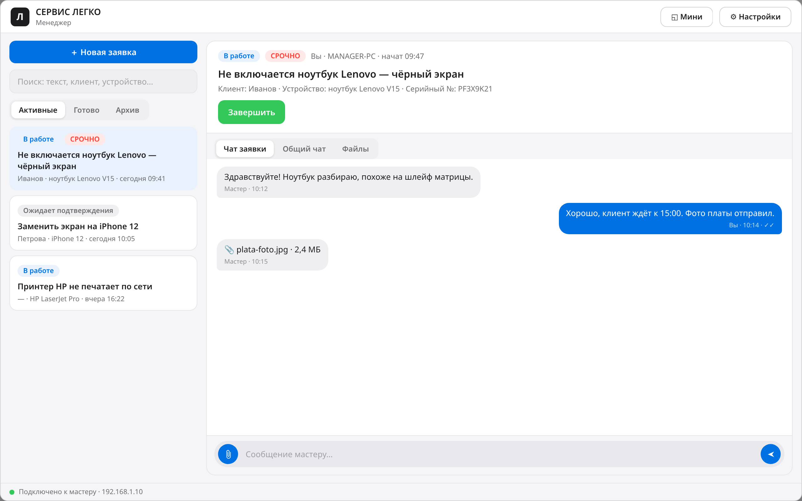
Главное окно менеджера: список заявок, карточка и чат
3.1. Зоны окна
Шапка. Логотип и роль, кнопки «◱ Мини» (свернуть в мини-панель над треем) и «⚙ Настройки».
Список заявок слева. У менеджера — кнопка «＋ Новая заявка» (или Ctrl+N), поиск и вкладки «Активные», «Готово», «Архив»; у мастера — поиск и вкладки «Активные», «Завершённые». Поиск фильтрует список по мере ввода: у менеджера по тексту, номеру, клиенту, устройству и серийному номеру; у мастера ещё и по имени менеджера и компьютеру. У менеджера под своими заявками показывается блок «Заявки других менеджеров» — все заявки всех пользователей за всё время, с именем автора и статусом.
Карточка заявки. Статус-значок («Ожидает подтверждения», «В работе», «Завершён»), бейдж «СРОЧНО» для срочных, автор и компьютер, время, описание и одна главная кнопка под текущий статус.
Чат. Вкладки «Чат заявки», «Общий чат» и «Файлы» — см. раздел 6.
Строка состояния внизу. Точка и текст: состояние связи, причина отказа при неудачном подключении, счётчик очереди отправки.
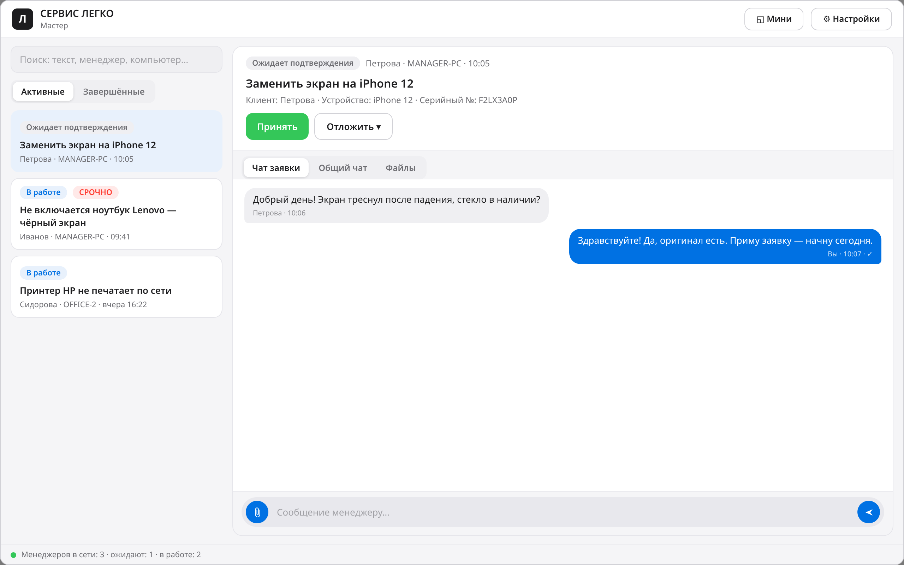
Главное окно мастера: новая заявка ждёт подтверждения
Если связи с мастером нет дольше ~20 секунд, под шапкой появляется полоса «Нет связи с мастером…» с кнопкой «Повторить сейчас». Короткие обрывы её не включают. Когда связь восстанавливается, полоса на 3 секунды становится зелёной и исчезает.
4. Работа менеджера
4.1. Создание заявки
Нажмите «＋ Новая заявка» (или Ctrl+N) и заполните форму (рис. 5):
Текст заявки — что случилось и что нужно сделать (обязательно);
Клиент, устройство, серийный № / IMEI — по желанию, всё попадёт в отчёт;
«Срочная заявка» — заявка получит красный бейдж «СРОЧНО» в списках у менеджера и мастера;
«＋ Добавить файл» — фото и файлы к заявке (до 10 файлов, каждый до 5 ГБ); вложения автоматически уходят в чат заявки.
Кнопка «Отправить заявку» создаёт заявку даже без связи: она уйдёт автоматически при подключении. Заявок может быть несколько одновременно — у каждой свой чат и свои вложения.
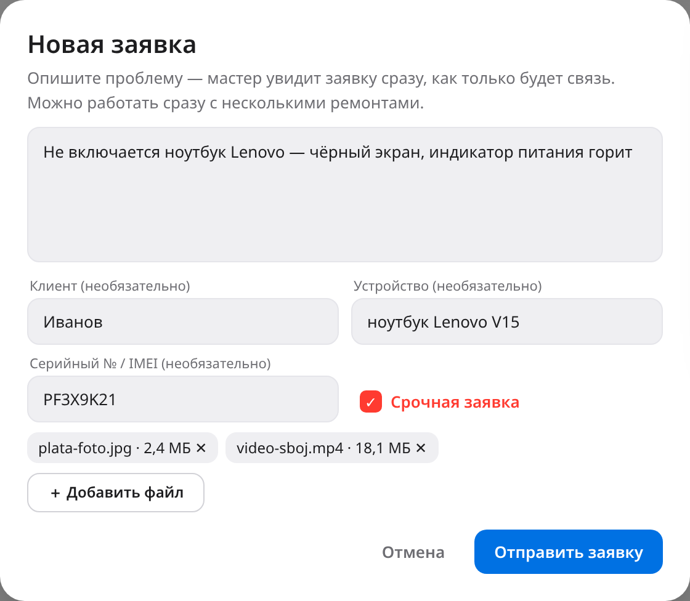
Форма новой заявки с полями и вложениями
4.2. Пока заявка ждёт
Новая заявка видна в списке «Активные» со статусом «Ожидает подтверждения».
Если мастер не отвечает дольше 5 минут, в карточке появляется кнопка «Напомнить мастеру» — у него снова зазвучит сигнал и появится карточка.
Пока заявка не принята, её можно отменить кнопкой «Отменить заявку»: она исчезает из списков у всех пользователей — сразу, а у отключённых — при первом подключении.
4.3. Завершение, отчёт и архив
Когда ремонт закончен, нажмите «Завершить» в карточке нужной заявки (мастер может сделать то же у себя). Откроется панель подтверждения с необязательным полем «Что сделано» — итог попадёт в отчёт.
На компьютере менеджера в общей папке автоматически создаются два файла отчёта: обычный TXT и красивый HTML (кнопка «Открыть HTML» — удобно распечатать из браузера). В отчёте: номер и название, клиент, устройство, серийный номер, срочность, пользователь и компьютер менеджера, время начала и завершения, длительность, вся переписка и имена приложенных файлов.
Завершённую карточку можно убрать кнопкой «В архив»: 8 секунд действует отмена, затем карточка убирается из списка менеджера на вкладку «Архив» (с кнопками «Отчёт» и «Удалить»), а у мастера и у остальных пользователей остаётся в общем списке со статусом «Завершена». TXT-отчёт и строка в «Журнал ремонтов.csv» сохраняются.
Если общая папка недоступна. Отчёт не теряется: он встаёт в очередь и сохранится автоматически, когда папка вернётся, — заявка показывает статус «Отчёт в очереди». Если ждать долго, зависшую заявку можно убрать кнопкой «Убрать без отчёта» (программа попросит подтверждение; отчёт создан не будет). У мастера для такой заявки есть кнопка «Удалить заявку». Удалённая заявка исчезает из списков у всех пользователей.
4.4. Заявки других менеджеров и удаление
На вкладках «Активные» и «Готово» под своими заявками показан блок «Заявки других менеджеров» — все заявки всех пользователей за всё время: и активные, и завершённые. У каждой строки видны автор и статус: «Ожидает мастера», «В работе», «Ожидает отчёт», «Завершена». Список обновляется сам: при подключении мастер присылает полный актуальный снимок.
Без связи блок остаётся на месте с пометкой «нет связи, данные на момент отключения» и обновится при подключении.
Чужую заявку можно открыть для просмотра: описание, клиент, устройство, серийный номер, итог «Что сделано», у завершённой — кнопка «Открыть папку отчётов». Чат по чужой заявке доступен её автору и мастеру.
Удалить заявку может любой пользователь — удаление действует сразу у всех. У менеджера: «Удалить заявку» в карточке чужой или своей заявки (у ожидающей — «Отменить заявку», у зависшей — «Убрать без отчёта»), а в «Архиве» — кнопка «Удалить» в строке. Программа попросит подтверждение и предупредит, если отчёт ещё не сохранён.
Удалённая заявка исчезает у мастера и у всех менеджеров — сразу, а у отключённых в этот момент — при первом подключении; удалённые заявки не «воскресают» при переподключении. Восстановить удалённую заявку нельзя. Файлы отчётов в общей папке остаются.
Изменить заявку может любой пользователь. Кнопка «Изменить» есть в карточке каждой заявки — своей и чужой, у менеджера и у мастера. Меняются описание, клиент, устройство, серийный номер/IMEI и срочность; статус заявки, даты и уже сохранённые отчёты правка не трогает. Изменения видны сразу у всех пользователей (у отключённых — при первом подключении); если заявку изменил кто-то другой, её автор видит уведомление «Заявка изменена». У менеджера правка доступна при подключении к мастеру.
4.5. Общая папка
Структура общей папки менеджеров
Папка / файл
Что внутри
Отчёты
TXT- и HTML-отчёты всех менеджеров
Полученные файлы
Вложения из чатов
Журнал ремонтов.csv
Все заявки и статусы («Ожидает подтверждения», «В работе», «Завершён») — открывается в Excel
Кнопка «Открыть общую папку» — в «⚙ Настройки». Путь можно изменить позже кнопкой «Изменить общую папку».
5. Работа мастера
5.1. Новая заявка
При поступлении заявки звучит сирена (нарастающая, до 3 минут), а в углу экрана поверх других окон появляется карточка (рис. 6). Она не перехватывает фокус и не блокирует работу.
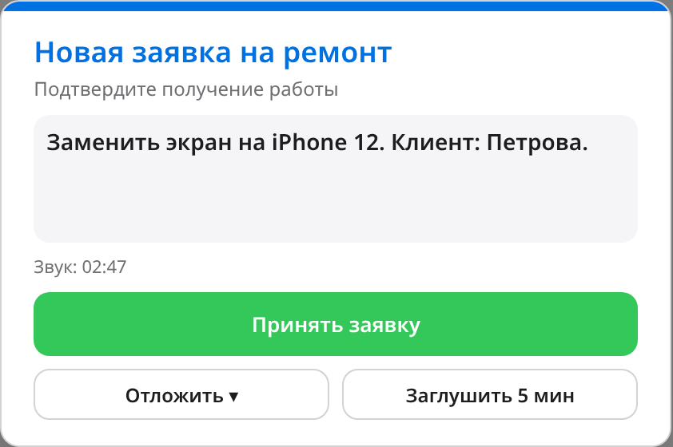
Карточка новой заявки у мастера
«Принять заявку» — останавливает сигнал и фиксирует время начала именно этого ремонта; время передаётся менеджеру и попадает в отчёт и CSV-журнал.
«Отложить ▾» — выбор: 5, 15, 30 минут или 1 час. Карточка и звук вернутся позже, заявка остаётся в списке. Тот же выбор есть в карточке заявки в главном окне.
«Заглушить 5 мин» — выключает звук, карточка остаётся на экране.
5.2. Ведение ремонта
К одному мастеру подключаются несколько менеджеров одновременно; у каждого может быть несколько заявок. Чаты и вложения разделены по заявкам и пользователям, ничего не смешивается.
Вкладка «Общий чат» открывает общий чат с менеджером, выбранным в переключателе над чатом, — удобно для вопросов вне конкретного ремонта. У каждого менеджера — свой отдельный общий чат с мастером, переписка не смешивается.
Переключатель «Чат с менеджером: …» над чатом (виден на вкладке «Общий чат») показывает только менеджеров в сети. Если менеджер в сети один — его имя сразу подставлено и показано зелёным; если несколько — нужного выбирают из раскрывающегося списка. Когда никого нет в сети, поле неактивно, раскрыть его нельзя, и оно серым показывает подсказку «Менеджер не в сети». Выбор менеджера открывает общий чат именно с ним.
Внизу окна всегда видно, сколько менеджеров на связи: «менеджеров в сети: X из Y» (Y — все известные мастеру менеджеры).
Значок в области уведомлений показывает сводку: сколько менеджеров в сети, ожидающие и активные заявки, размер очереди.
Мастер видит принятые работы после перезапуска программы с исходным временем начала — повторное подтверждение не требуется.
5.3. Завершение и особые случаи
«Завершить» — отчёт создаётся на компьютере менеджера; мастер получает подтверждение сохранения. Если у менеджера временно недоступна общая папка, заявка у мастера показывает «Ожидает отчёт».
Любую заявку мастер может изменить кнопкой «Изменить» в её карточке: описание, клиент, устройство, серийный номер и срочность обновятся сразу у всех пользователей. Статус заявки и сохранённые отчёты не меняются.
Любую заявку — ожидающую, в работе, ожидающую отчёт или завершённую — мастер может удалить кнопкой «Удалить заявку» в её карточке. Программа попросит подтверждение и предупредит, если отчёт ещё не сохранён. Заявка исчезает из списков у всех пользователей — сразу, а у отключённых менеджеров — при первом подключении; восстановить её нельзя. Файл отчёта в общей папке остаётся.
Если ожидание отчёта затянулось (папка недоступна долго), это тот же случай: кнопка «Удалить заявку» уберёт такую заявку у всех, отчёт при этом создан не будет.
Массовая очистка от старых и «фантомных» заявок: «⚙ Настройки» → «Очистка списка заявок» → кнопка «Очистка списка заявок…». Для каждой группы — свой порог: завершённые старше 30/90/180 дней (или все), ожидающие принятия и ожидающие отчёт — старше 7/30 дней (или все). Перед удалением показывается точное количество, действие требует подтверждения и действует сразу у всех пользователей. Заявки «В работе» очистка не трогает никогда.
5.4. Подключение новых компьютеров менеджеров
Новое устройство менеджера подключается по одноразовому коду. Пока кода нет, подключить новое устройство невозможно — уже сопряжённые компьютеры работают как обычно.
Откройте «⚙ Настройки» → раздел «Подключение» и нажмите «Добавить компьютер».
На экране появится код из 6 цифр и обратный отсчёт: код действует 5 минут. Назовите цифры менеджеру.
После первого успешного сопряжения код гаснет — для следующего компьютера нажмите кнопку ещё раз.
Если за время действия кода введено 5 неверных значений, режим добавления отключается: на экране появится сообщение «Режим добавления отключён: были неверные попытки. Нажмите «Добавить компьютер» ещё раз».
В этом же разделе — список сопряжённых устройств: любое из них можно «забыть», и оно потеряет доступ.
6. Чат и файлы
6.1. Три вкладки
Чат заявки — переписка по выбранному ремонту. После завершения ремонта историю можно читать и копировать, писать нельзя.
Общий чат — переписка без привязки к ремонту, открыта всегда, даже без активных заявок. У мастера общий чат отдельный с каждым менеджером: собеседник выбирается переключателем «Чат с менеджером: …» над чатом (в списке — только менеджеры в сети; без сети поле неактивно и показывает «Менеджер не в сети»).
Файлы — все вложения выбранной заявки и общего чата одним списком с кнопками «Открыть».
6.2. Отправка сообщений
Enter — отправить, Shift+Enter — новая строка.
Ctrl+V вставляет скриншот из буфера обмена (уходит файлом PNG и показывается миниатюрой) или скопированные в проводнике файлы.
Файлы прикрепляются кнопкой-скрепкой слева от поля ввода или перетаскиванием прямо в окно чата — можно сразу несколько.
Статусы под своими сообщениями: «○ В очереди» → «✓ Доставлено» → «✓✓ Прочитано».
Текст любого сообщения выделяется мышью и копируется обычным Ctrl+C.
6.3. Меню правой кнопки по сообщению
Правый клик по любому сообщению открывает меню в стиле Telegram — скруглённая карточка в цветах текущей темы оформления с иконками (рис. 7):
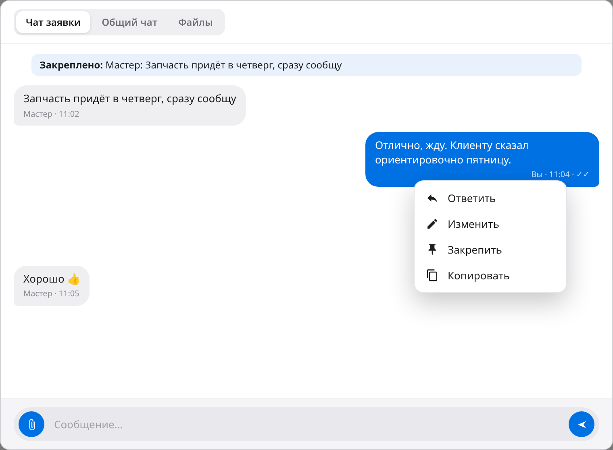
Меню правой кнопки: «Ответить», «Изменить», «Закрепить», «Копировать»
Действия меню сообщения
Пункт
Что делает
Ответить
Вставляет цитату (автор и начало сообщения) в поле ввода — остаётся дописать ответ
Изменить
Только свои текстовые сообщения: текст возвращается в поле, Enter сохраняет правку, Esc отменяет. Исправление сразу видно собеседнику
Закрепить
Закрепляет сообщение полосой над историей у обоих участников; клик по полосе прокручивает к сообщению. Повторный выбор — «Открепить». Закреп сохраняется между перезапусками
Копировать
Копирует текст сообщения (или название файла) в буфер обмена
6.4. Передача файлов
Файл передаётся частями: в пузыре видны процент, переданный объём и скорость. Текстовые сообщения ходят параллельно, не дожидаясь окончания передачи.
При обрыве связи передача продолжится с места обрыва после переподключения; целостность проверяется по SHA-256. Максимальный размер одного файла — 5 ГБ.
Если большие файлы отправляются слишком долго, над полем сообщения появляется «Остановить файлы»: недоставленные файлы этого чата отменяются (у получателя удаляется недокачанная часть), связь и переписка продолжаются.
Неотправленное сообщение «В очереди» можно удалить маленьким значком «✕» рядом с датой.
7. Уведомления и звуки
7.1. Карточка входящего сообщения
Новое сообщение или файл вызывает карточку в правом нижнем углу, над часами (рис. 8) — в стиле мини-панели. Карточка звучит сигналом, не исчезает сама и не перехватывает фокус: закрывается только кнопкой или ✕.
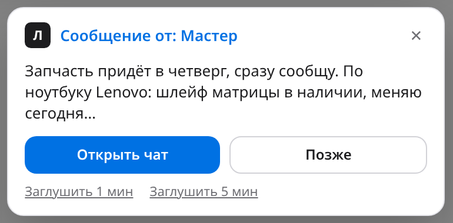
Карточка входящего сообщения справа внизу экрана
«Открыть чат» — открывает нужный чат и останавливает сигнал.
«Позже» — закрывает карточку, сообщение остаётся непрочитанным.
Громкая нарастающая сирена (950/1400 Гц), до принятия, но не дольше 3 минут
Сообщение или файл в чате заявки
Двухтональный восходящий сигнал (660 → 990 Гц), до открытия чата, не дольше 3 минут
Сообщение или файл в общем чате
Два коротких низких тона (440 Гц), до открытия чата, не дольше 3 минут
Завершение ремонта у менеджера
Короткая восходящая мелодия из четырёх нот, один раз
Если нужный чат уже открыт и окно активно, звук не включается. Сценарии настраиваются в «⚙ Настройки»: «Стандартный», «Мягкий», «Короткий» или «Свой звук…» (WAV/MP3 с диска) — выбранный вариант играет один раз сразу при выборе. «Тихие часы» выключают звук в заданный интервал (например, 22:00–08:00), визуальные уведомления остаются.
7.3. Уведомления Windows
Заявки, сообщения и завершение дублируются стандартными уведомлениями Windows — системный тост исчезает сам через несколько секунд, постоянным напоминанием служит внутренняя карточка программы. Если уведомлений не видно, проверьте «Параметры → Система → Уведомления» и отключите «Не беспокоить».
8. Мини-панель и область уведомлений
Одиночный клик левой кнопкой по значку «СЕРВИС ЛЕГКО» возле часов открывает компактную мини-панель над треем (рис. 9 и 10). Она закрывается кликом мимо неё, клавишей Esc или повторным кликом по значку.
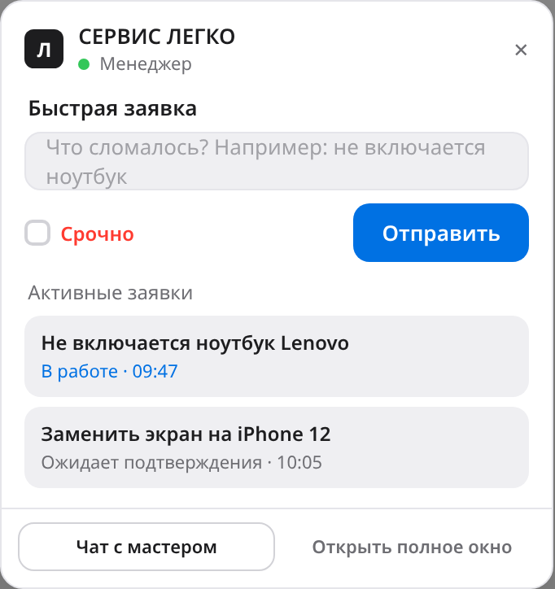
Мини-панель менеджера
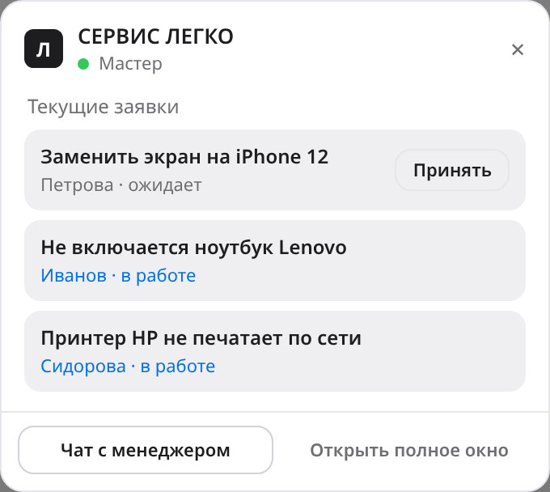
Мини-панель мастера
У менеджера — «Быстрая заявка»: одно поле «Что сломалось?», галочка «Срочно» и кнопка «Отправить» (работает и Enter); ниже — список активных заявок, клик по строке открывает её в полном окне.
У мастера — список всех текущих заявок с кнопкой «Принять» прямо в строке.
Внизу панели — кнопка «Чат с мастером» (у менеджера) или «Чат с менеджером» (у мастера — открывает общий чат с выбранным менеджером) и «Открыть полное окно».
Кнопка «◱ Мини» в шапке главного окна сворачивает программу в мини-панель: полное окно скрывается, панель остаётся над треем. Когда заявок больше трёх, список прокручивается.
8.1. Крестик не закрывает программу
Нажатие на ✕ любого главного окна скрывает программу в область уведомлений — связь, сигналы, чаты и очередь продолжают работать. Вернуть окно: двойной клик по значку или правая кнопка → «Открыть СЕРВИС ЛЕГКО». Полный выход — только через правую кнопку по значку → «Закрыть программу»; если есть неотправленные сообщения, программа предупредит: очередь сохранится и уйдёт при следующем запуске.
9. Настройки
Все параметры собраны на выдвижной панели «⚙ Настройки» (рис. 11). Клавиша Esc закрывает панель.
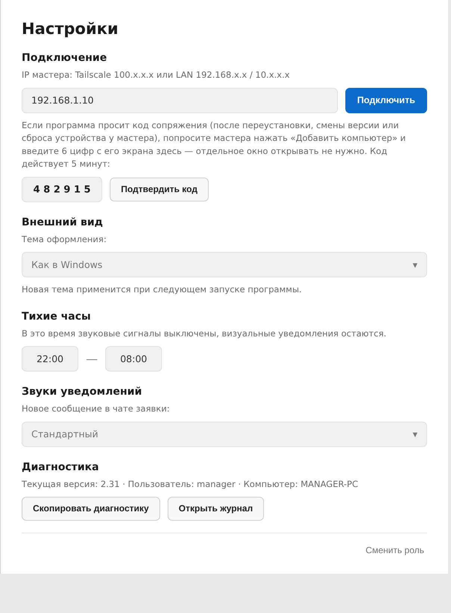
Панель настроек менеджера
Разделы настроек
Раздел
Что внутри
Подключение
Адрес мастера и кнопка «Подключить», автопоиск мастера в сети, «Недавние мастера», поле кода сопряжения с «Подтвердить код». У мастера — кнопка «Добавить компьютер» (одноразовый код на 5 минут), его адреса («Обновить адреса») и список сопряжённых устройств
Внешний вид
Тема: «Как в Windows», «Светлая» или «Тёмная». Новая тема применится при следующем запуске программы
Тихие часы
Интервал без звука (например, 22:00–08:00)
Звуки уведомлений
Отдельный звук для каждого сценария, включая свой файл WAV/MP3
«Автозапуск вместе с Windows» и «При автозапуске открываться только в трее» (оба включены по умолчанию)
10. Обновление программы
Как обновить: закройте программу (правой кнопкой по значку возле часов → «Закрыть программу») и замените exe-файл на новый — скопируйте новый «СЕРВИС ЛЕГКО.exe» поверх старого. Заявки, чаты, настройки и очередь отправки полностью сохраняются.
Это одинаково для мастера и менеджеров: программа никогда не заменяет собственный exe-файл сама. Текущая версия показана в «⚙ Настройки» → «Диагностика».
Версии должны совпадать. Обновляйте мастера и менеджеров вместе. Если версии разойдутся, программа честно покажет «Обновите программу — версии отличаются» вместо тихого сбоя. Блокировка временная: менеджер повторит попытку сам через 10 минут или сразу по кнопке «Повторить сейчас».
11. Работа через интернет (Tailscale)
Для связи через интернет не нужен свой сервер, белый IP или настройка роутера — достаточно один раз установить бесплатный Tailscale на оба компьютера:
Скачайте и установите Tailscale с официальной страницы: https://tailscale.com/download/windows.
Нажмите значок Tailscale возле часов и войдите в один и тот же аккаунт на обоих компьютерах (например, через Google или Microsoft). Оставьте Tailscale включённым.
У мастера откройте «⚙ Настройки» → «Обновить адреса»: появится адрес, начинающийся со 100. Сообщите его менеджеру.
Менеджер вводит адрес 100.x.x.x в «⚙ Настройки» и нажимает «Подключить». Если брандмауэр снова задаёт вопрос — разрешите.
После этого компьютеры могут быть в разных сетях и городах. Адрес мастера сохраняется, менеджер автоматически пытается подключаться каждые 8 секунд. Адрес Tailscale не меняется при переходе между Wi-Fi и проводной сетью — для постоянной работы используйте именно его. При обрывах заявки, переписка и очередь сохраняются, а после восстановления связи всё отправляется автоматически без дублей.
Сторонний VPN может блокировать Tailscale. Если связь не восстанавливается, разрешите Tailscale в настройках VPN или временно отключите сторонний VPN — программа не может обойти блокировку сама.
12. Решение проблем
Типичные ситуации и действия
Ситуация
Что делать
Нет подключения, «Мастер не отвечает»
Чаще всего брандмауэр на компьютере мастера — разрешите программу в частных сетях. Проверьте, что программа запущена у обеих сторон
«Компьютер отвечает, но порт закрыт»
Программа мастера не запущена или её заблокировал антивирус. Порт TCP 47891 должен быть открыт
«Адрес недоступен»
Проверьте IP. Для интернета используйте адрес Tailscale 100.x.x.x, а не 192.168.x.x, и убедитесь, что Tailscale включён и выполнен вход в один аккаунт
Менеджер не находит мастера автоматически
Оба ПК должны быть в одной сети (не в изолированной гостевой); работает UDP-порт 47892. Либо введите адрес вручную
Окно сопряжения: «Код неверный»
Проверьте цифры на экране мастера. После 5 неверных попыток мастер нажимает «Добавить компьютер» ещё раз и называет новый код
Окно сопряжения: «нет действующего кода…»
Код действует 5 минут. Попросите мастера нажать «Добавить компьютер» и назвать свежий код. Программа показывает, к какому адресу шла попытка, — проверьте, что это тот самый компьютер мастера. Если мастер отключил добавление после неверных попыток, он просто нажимает «Добавить компьютер» ещё раз
У мастера «Порт 47891 уже занят»
Работает вторая копия программы или старая «РемонтСвязь»: закройте её через значок возле часов (правой кнопкой → «Закрыть программу») и перезапустите
Windows показала предупреждение SmartScreen
«Подробнее» → «Выполнить в любом случае». Это стандартная реакция на новые файлы; со временем она исчезает
Не видны уведомления Windows
Параметры → Система → Уведомления; отключите «Не беспокоить»
Не слышно сигналов
Проверьте системную громкость, «Тихие часы» и выбранный звук в «⚙ Настройки»
«Обновите программу — версии отличаются»
Обновите обе стороны до одной версии. Повторная попытка — сама через 10 минут или по кнопке «Повторить сейчас»
Нужна помощь разработчика
«⚙ Настройки» → «Скопировать диагностику» и «Открыть журнал» — приложите app.log к обращению
Активная сессия, история и очередь сохраняются автоматически в личной папке программы текущего пользователя Windows. Отчёты и полученные файлы дополнительно остаются в общей папке менеджеров.